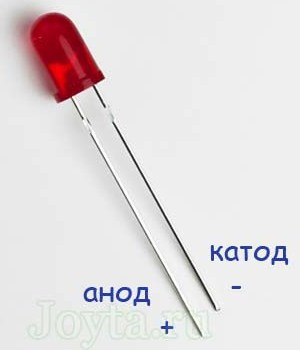
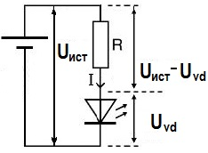
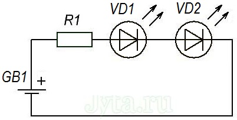
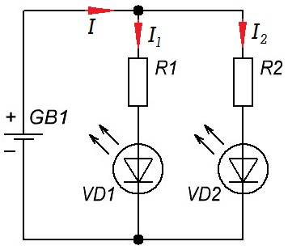
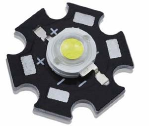
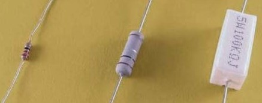
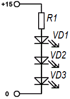
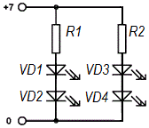
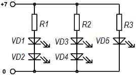

Расчёт резистора для светодиода
Светодиод, в основном, имеет 2 вывода: длинный вывод (анод) соединяется с плюсом питания, более короткий вывод (катод) с минусом. Светодиод, подключенный наоборот не будет светиться, и кроме того, при превышении определенного напряжения может даже сгореть.

Рис. 1 - Цоколевка светодиода
Расчёт резистора для светодиода - очень важный момент перед подключением светодиода к источнику питания. От этого зависит то, как будет работать светодиод. Если резистор будет иметь слишком маленькое сопротивление, то светодиод может выйти из строя (перегореть), а если сопротивление будет слишком велико, то светодиод будет излучать свет слабо.
Светодиод - это элемент, питаемый током (не напряжением!). Поэтому правильно подобранный ток, напрямую влияет на срок службы светодиода.
Чтобы правильно сделать расчеты, нужно знать прямой ток (forward current) и прямое напряжение (forward voltage) светодиода.
Типовыми параметрами для одноцветных светодиодов диаметром 5 мм являются:
- красный светодиод: 20 мА / 2,1 В;
- зеленый светодиод: 20 мА / 2,2 В;
- желтый светодиод: 20 мА / 2,2 В;
- оранжевый светодиод: 25 мА / 2,1 В;
- синий светодиод: 20 мА / 3,2 В;
- светодиод белый: 25 мА / 3,4 В.
Эти значения параметров светодиода могут незначительно отличаться в зависимости от экземпляра и производителя светодиодов.

Рис. 2 - Схема подключения светодиода
Расчёт резистора для светодиода производится по следующей формуле:
R = (Uист - UVD) / I
Uист - напряжение источника питания (В).
UVD - напряжение питания светодиода (В).
I - ток светодиода (мА, А)
Убедитесь, что выбранный вами электрический ток меньше максимального, на который рассчитан светодиод. Переведите эту величину из миллиампер в амперы. Таким образом результатом вычисления будет величина сопротивления резистора в омах (Ом).
Если рассчитанная величина сопротивления резистора не совпадает со стандартным номиналом резисторов, необходимо выбрать ближайший больший номинал. В прочем, Вы можете изначально захотеть выбрать несколько большее сопротивление, для экономии электричества например. Но надо помнить, что излучение светодиода в этом случае будет менее ярким.
Пример.
Имеется источника питания с напряжением 9 В и красный светодиод (UVD = 2 В, I = 20 мА = 0,02A). Рассчитать сопротивление ограничительного резистора.
Решение
R = (9 - 2) / 0,02 = 350 [Ом].
Необходимо выбрать резистор сопротивлением 390 Ом (ближайшее большее значение).
Пример.
Рассчитать резистор для схемы , в которой последовательно соединены два красных светодиода (прямой ток 20 мА, прямое напряжение 2,1 В).
Решение

Рис. 3 - Последовательное соединение двух светодиодов
Величину сопротивления резистора R1 рассчитываем аналогично, как в примере выше, с той лишь разницей, что от напряжения бортовой сети автомобиля (14 В), необходимо вычесть падение напряжения на обоих диодах VD1 и VD2:
UR1 = UGB1 – UVD1 – UVD2
UR1 = 14 – 2,1 – 2,1 = 9,8 [В]
Теперь подставим данные в формулу:
R1 = UR1 / I
R1 = 9,8 / 0,02 = 490 [Ом]
Резистор R1, к которому подключены последовательно два красных светодиода, должен иметь сопротивление минимум 490 Ом. Ближайший в ряду является резистор номиналом 510 Ом. Если у вас нет резистора номиналом 510 Ом, помните, что вы можете соединить последовательно несколько резисторов, например, 5 резисторов по 100 Ом.
Можно ли в этой схеме последовательно подключить еще 5 светодиодов? Нет! Каждому красному светодиоду нужно 2,1 В. Легко подсчитать, что батарея на 14 В не в состоянии обеспечить такое напряжение:
14 < 2,1 × 7 [B]
14 < 14,7 [B]
Пример.
Предположим, что светодиод - VD1 красный (прямой ток 20 мА, прямое напряжение около 2,1 В), а светодиод VD2 имеет белый цвет (прямой ток 25 мА, прямое напряжение 3,4 В) (рис. 4).

Рис. 4 - Параллельное соединение светодиодов
Из первого закона Кирхгофа мы знаем, что:
I = I1 + I2
I = 20 + 25 =45 [мА]
Подключая светодиоды параллельно к источнику питания, следует помнить, что каждый светодиод должен иметь свой резистор! Теперь давайте посчитаем падение напряжения на каждом из резисторов:
UR1 = UGB1 – UVD1 = 6 – 2,1 = 3,9 [В]
UR2 = UGB1 – UVD2 = 6 – 3,4= 2,6 [В]
Зная силу тока и напряжение, можно вычислить сопротивления:
R1 = UR1 / I1 = 3,9 / 0,02 = 195 [Ом]
R2 = UR2 / I2 = 2,6 / 0,025 = 104 [Ом]
Резистор R1 должен иметь сопротивление как минимум 195 Ом (ближайший в номинальном ряду резистор на 200 Ом), а резистор R2 должен иметь сопротивление не менее 104 Ом (ближайший в ряду будет на 120 Ом).
Как лучше соединять светодиоды: последовательно или параллельно? Ответ не простой, потому что оба варианта имеют свои плюсы и минусы:
Таблица 2
| последовательное соединение | параллельное соединение |
|---|---|
| для всех светодиодов достаточно одного резистора | каждый светодиод должен иметь свой собственный резистор |
| повреждение одного светодиода приводит к отключению всей цепочки светодиодов | при повреждении одного или несколько светодиодов, остальные светодиоды будут светятся |
| низкое значение тока | ток в цепи увеличивается с каждым последующим светодиодом (ток каждой ветви суммируется) |
| требуется более высокое напряжение источника питания с учетом падения напряжения на каждый из светодиодов | напряжение питания в схеме может быть низким |
Рассмотрим расчет подключения мощных светодиодов. Мощные светодиоды используются, например, в автомобилях.

Рис. 5 - Мощный светодиод в автомобиле
Мощный светодиод имеет прямой ток 350 мА и падение напряжения 3,3 В. Рассчитаем сопротивление для мощного светодиода:
UR1 = UGB1 – UVD1 = 14 – 3,3 = 10,7 [В]
R1 = UR1 / I = 10,7 / 0,35 = 31 [Ом]
Для нашего примера надо подобрать резистор минимум 31 Ом. Помимо соответствующего сопротивления резистор должен иметь соответствующую номинальную мощность, т. е. допустимую мощность, которая выделяется на резисторе при его работе. Слишком большая мощность может повредить резистор.
Мощность вычисляем по следующей формуле:
P = U I
P = UR1I = 10,7 · 0,35 = 3,7 [Вт]
Номинальная мощность рассчитанного резистора - это минимум 3,7 Вт. Поэтому резисторы мощностью 0,25 Вт быстро сгорят. В приведенном выше примере необходимо применить резистор на 5 Вт, но лучшим решением использование нескольких резисторов по 5 Вт, соединенных последовательно или параллельно. Причина в том, что резисторы плохо отводят тепло (хотя бы из-за их формы), а использование нескольких резисторов сразу увеличит общую площадь поверхности, через которую происходит отдача тепла.

Рис. 6 - Резисторы с различной номинальной мощностью
При подборе резистора для мощного светодиода необходимо дополнительно учитывать значительное повышение температуры самого светодиода, что вызывает изменение прямого тока. Поэтому лучше взять резистор большего сопротивления, что обеспечит стабильную работу светодиода при увеличении прямого тока из-за его нагрева во время работы.
Но на практике для питания мощных светодиодов применяют стабилизаторы тока.
Общее правило при подборе резистора (резисторов) для светодиодов является использование чуть большего сопротивления, чем это следует из расчетов. Прямой ток и падение напряжения, протекающие через светодиод лучше измерить мультиметром, чтобы в расчетах учитывать реальные параметры конкретного светодиода.
Пример
Имеются светодиоды с рабочим напряжением UVD= 3 В и рабочим током IVD= 20 мА. Надо подключить N=3 светодиода к источнику Uпит= 15 В.

Рис. 7 - Последовательное соединение трех светодиодов
Расчет:
Вычисляем суммарное падение напряжения на светодиодах:
UVD сум = NUVD= 3·3 = 9 [В],
UVD сум < Uпит
То есть источника питания на 15 В достаточно для последовательного включения светодиодов.
Расчет аналогичен предыдущему примеру
UR1 = Uпит– UVD сум= 15 – 9 = 6 [В]
R1 = UR1/IVD = 6/0,02 = 300 [Ом]
Пример
Пусть имеются светодиоды с рабочим напряжением UVD= 3 В и рабочим током IVD= 20 мА. Надо подключить N=4 светодиода к источнику Uпит= 7 В.
Расчет:
UVD сум = NUVD= 4·3 = 12 [В],
UVD сум> Uпит
Напряжения 7 B не хватит для последовательного подключения светодиодов, поэтому будем подключать их последовательно-параллельно. Разделим их на две группы по 2 светодиода.

Рис. 8 - Последовательно-параллельное соединение четырех светодиодов
Теперь надо сделать расчет токоограничивающих резисторов. Аналогично предыдущим пунктам делаем расчет токоограничительных резисторов для каждой ветви.
UVD сум1 = N1UVD= 2·3 = 6 [В],
Uгас = Uпит– UVD сум1= 7 – 6 = 1 [В]
R = Uгас/IVD = 1/0,02 = 50 [Ом]
Так как светодиоды в ветвях имеют одинаковые параметры, то сопротивления в ветвях одинаковые.
Пример.
Если имеются светодиоды разных марок то комбинируем их таким образом, чтобы в каждой ветви были светодиоды только ОДНОГО типа (либо с одинаковым рабочим током). При этом необязательно соблюдать одинаковость напряжений, потому что мы для каждой ветви рассчитываем свое собственное сопротивление
Например имеются 5 разных светодиодов:
- красный (3 В, 20 мА),
- зеленый (2,5 В, 20 мА),
- синий (3 В, 50 мА),
- белый (2,7 В, 50 мА),
- желтый (3,5 В, 30 мА).
Так как разделяем светодиоды по группам по току
1) красный и зеленый;
2) синий и белый;
3) желтый.

Рис. 9 - Последовательно-параллельное соединение пяти светодиодов
Рассчитываем для каждой ветви резисторы:
R = Uгас/IVD
Uгас = Uпит – (UVDY + UVDX + …)
При Uпит = 7 В, Uvd1 = 3 В, Uvd2 = 2,5 В, Ivd = 20 мА = 0,02 А получим:
R1 = (7-(3+2,5))/0,02 = 75 Ом
Аналогично для других ветвей:
R2 = 26 Ом.
R3 = 117 Ом.
Аналогично можно расположить любое количество светодиодов
ВАЖНОЕ ЗАМЕЧАНИЕ!!! При подсчете токоограничительного сопротивления получаются числовые значения которых нет в стандартном ряде сопротивлений,
поэтому подбираем резистор с сопротивлением немного большим чем рассчитали.
Что будет если имеется напряжение источник с напряжением 3 В (и меньше) и светодиод с рабочим напряжением 3 В?
Допустимо (НО НЕЖЕЛАТЕЛЬНО) включать светодиод в цепь без токоограничительного сопротивления. Минусы очевидны – яркость зависит от напряжения питания. Лучше использовать dc-dc конвертеры (преобразователи повышающие напряжение).
Можно ли включать несколько светодиодов с одинаковым рабочим напряжением 3 В параллельно друг другу к источнику 3 В (и менее)?
Опять, это допустимо в радиолюбительской практике. Минусы такого включения: так как светодиоды имеют определенный разброс по параметрам, то будет наблюдаться следующая картина, одни будут светится ярче, а другие тусклее, что не является эстетичным, что мы и наблюдаем в приведенных выше фонариках. Лучше использовать dc-dc конвертеры (преобразователи повышающие напряжение).
ЗАМЕЧАНИЕ! Представленные выше схемы не отличаются высокой точность рассчитанных параметров, это связано с тем, что при протекании тока через светодиод происходит выделение тепла в нем, что приводит к разогреву p-n перехода, наличие токоограничивающего сопротивления снижает этот эффект, но установление баланса происходит при немного повышенном токе через светодиод. Поэтому целесообразно для обеспечения стабильности применять стабилизаторы тока, а не стабилизаторы напряжения. При применении стабилизаторов тока, можно подключать только одну ветвь светодиодов.
Источники
katod-anod.ru - Расчёт резистора для светодиода
joyta.ru - Основы электроники. Урок №4: Расчет резистора для светодиода